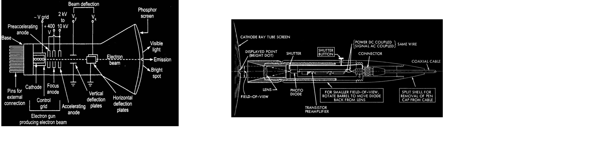
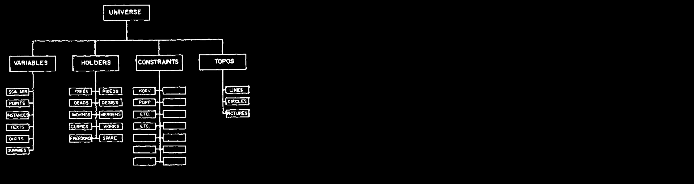
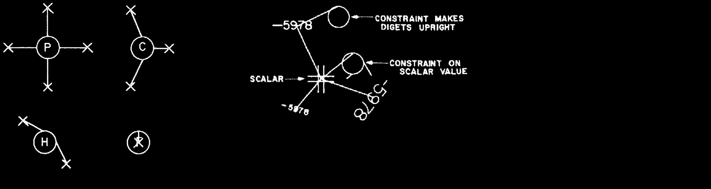
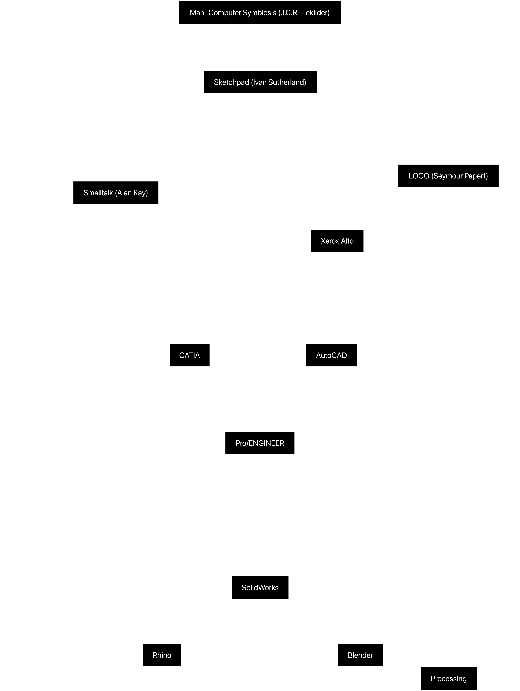

COLUMBIA UNIVERSITY GSAPP CDP
benny yang
ARCHA4144 METHODS AS PRACTICES
Precedent Study - Sketchpad
↓Data
Collection
From Ivan Sutherland and Those He Inspired
| Title | Author | Year | Format | Audience | Source |
|---|---|---|---|---|---|
| Sketchpad: A Man–Machine Graphical Communication System | Ivan E. Sutherland | 1963 | PhD Thesis | Computer Scientists, Engineers | Thesis PDF |
| Sketchpad Demonstration | Ivan E. Sutherland | 1963 | Film Demonstration | General Audience, Computer Scientists | MIT Lincoln Lab |
| Sketchpad: A Man–Machine Graphical Communication System | Ivan E. Sutherland | 1963 | Conference Paper (AFIPS) | Computer Scientists, Engineers | AFIPS Paper |
| The Ultimate Display | Ivan E. Sutherland | 1965 | Visionary Essay | HCI Researchers, VR Enthusiasts | IFIP Congress |
| Sketchpad: A Man–Machine Graphical Communication System | Ivan E. Sutherland | 1994 | Lecture | Researchers, Engineers, Technologists | IFIP Congress |
| Computer Sketchpad | John T. Fitch | 1964 | Television Program | General Audience, Computer Scientists | MIT Science Reporter |
| A Personal Computer for Children of All Ages | Alan Kay | 1972 | Paper | Computer Scientists and Technologists | Xerox PARC |
| Doing with Images Makes Symbols | Alan Kay | 1987 | Video Lecture | Computer Science Students | Internet Archive |
| Sketchpad Preface | Blackwell & Rodden | 2003 | Technical Report Commentary | Computer Science Researchers | Cambridge Archive |
| Afterword: What is a Dynabook? | Alan Kay | 2013 | Commentary on 1972 Paper | General Audience | Viewpoints Research Institute |
| No-Code History: Sketchpad | InstaDeq Blog | 2022 | Blog Post | No-Code, Design, HCI Community | InstaDeq |
| The Very Beginning of Digital Representation | BimaPlus | 2018 | Web Article | Architecture, CAD Community | BimaPlus |
| Kyoto Prize Citation | BBVA Foundation | 2019 | Award Citation | General Audience, HCI Community | BBVA Foundation |
| Time Interview with Ivan Sutherland | Time Magazine | 2013 | Interview | General Audience | Time.com |
↓Layers of
Analysis
Visual Analysis
PRIMITIVES
They are the atomic building blocks of Sketchpad—the “what exists” visually. These geometric
primitives are first-class citizens of the system—each is an object that can be created, stored,
manipulated, and constrained.
CONSTRAINTS
Sketchpad introduced the idea that geometric relationships could be formally expressed and
enforced. These are relational objects—not visual, but ontologically real within the system.
They mediate and govern interactions between primitives.

INSTANCE ADN MASTER FIGURE
Sketchpad supports object instancing, a precursor to object-oriented programming. Master Drawing
is a reusable figure defined once, and an instance is a scaled, rotated, or translated copy of a
master figure. These introduce hierarchical composition—drawings made of reusable parts. This
hierarchal structure is essential to modularity and abstraction.

TRANSFORMATION
Transformations exist as operations but are also definable components in the system.
Transformations can be applied to any instance or primitive, and they define a mathematical
relationship between coordinate systems.
INTERACTION
Transformations exist as operations but are also definable components in the system.
Transformations can be applied to any instance or primitive, and they define a mathematical
relationship between coordinate systems.

Ontological Analysis

INTERNAL DATA STRUCTURES
Under the hood, these structures define how things exist and are connected. These are the
computational
substrates that hold and enforce the existence of all other entities.
Node-based structures: Each graphical object has a data node.
Constraint solver: A recursive engine that enforces and propagates constraints.
Display file: Stores drawing commands and their relationships. 
MATHEMATICAL AND LOGICAL FOUNDATIONS
Sketchpad formalizes geometry through computation. These are abstract entities—they define
behavior, not form—but they are necessary to the ontology of the system as a live, interactive
model.
Geometric algebra: Underlies the constraint system.
Logical assertions: Conditions (if/then relationships) between primitives.
Recursive propagation: Maintains constraint validity across the model. 
Contextual Analysis
Most computers in the Sixties were used for batch processing—punch cards submitted to
mainframes, results printed hours later. The idea of real-time, graphical interaction with a
computer was radical and almost nonexistent in practice. There were no established computer
graphics systems. Basic plotting existed, but the idea of drawing with a computer using a
pen-like device was revolutionary. CRTs (cathode ray tubes) were being explored for direct
visual output, paving the way for visual computing.
Sutherland sought to demonstrate that computers could support visual thinking, not just numerical calculation. He challenged the notion that computers were only for mathematicians or engineers—he imagined them as tools for designers, architects, engineers, and eventually everyone. Sketchpad was implicitly questioning the role of humans in computing—introducing the idea of human-computer symbiosis (a term popularized by J.C.R. Licklider in 1960).
Although Sutherland couldn’t have foreseen all future applications, Sketchpad laid the groundwork for CAD softwares, GUI design, video games, virtual and augmented reality. It was the first system to combine graphical interaction, constraints, object instancing, and real-time feedback—the origin point of modern GUI and CAD. Sutherland introduced ideas that would reappear in Object-oriented programming (via master-instance), UX/UI design principles (direct manipulation), and Parametric modeling (via constraints). 
↓Final
Thoughts
Practice and Methodology
The methodology underlying Sketchpad is a synthesis of computational geometry, logic-based
constraint solving, and interactive interface design. Sutherland’s software approach was
fundamentally object-oriented before the term existed — using data structures to define reusable
“master” figures and establishing relationships between them via constraints. The system’s
architecture was deeply linked to the TX-2 computer’s hardware capabilities, including light pen
input and real-time CRT rendering. From a data perspective, Sketchpad treated geometry not as
static image but as logical structure — a radical reframing of visual form as a manipulable,
rule-based system. The theoretical method was grounded in cybernetics and man–machine symbiosis:
the goal was not automation, but augmentation — creating a medium where human intuition and
machine precision could interact dynamically. In this study, I used temporal structuring and
visual mapping as methodological tools to understand how such computational paradigms evolve,
propagate, and fragment into subdomains like CAD, visual programming, and creative coding.
Rhetorical Positioning
Sketchpad is not just a technical demonstration; it is a rhetorical act — an argument for a new
relationship between humans and computers. By enabling users to draw and manipulate geometry
directly, Sutherland challenged the dominant notion of computers as abstract, symbolic
processors and reframed them as visual, spatial collaborators. The project asserts that drawing
is a form of reasoning, and that logic can be embedded in space — a claim that resonates across
architecture, design, and programming. Within Sutherland’s wider practice, Sketchpad marks the
beginning of a lifelong inquiry into spatial computation, extended later through his work in 3D
graphics and virtual reality. Its influence runs like an invisible thread through nearly every
piece of software I use daily — from Rhino, with its precision modeling and NURBS-based
geometry, to Blender, with its object instancing and transformable 3D views, to Processing,
which echoes Sketchpad’s belief that drawing and logic can coexist in code. Even the
fundamentals of drag-and-drop interfaces, layers, and constraint-based layouts in tools like
Figma or Adobe Illustrator have roots in the direct manipulation paradigm Sketchpad introduced.